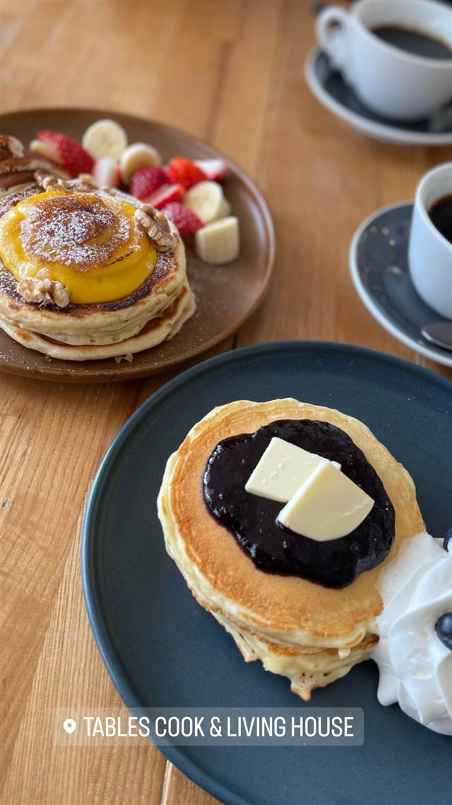
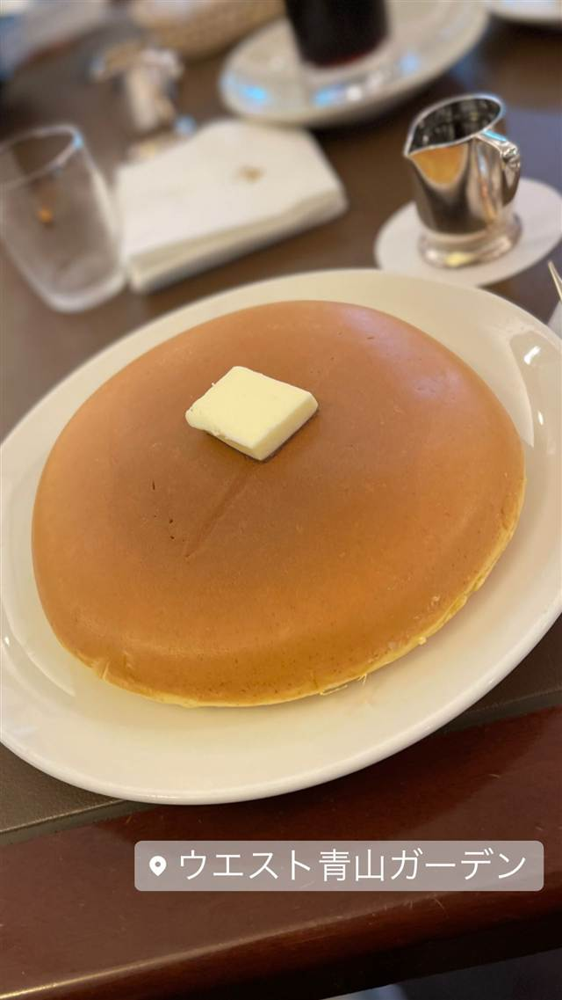

スイーツ · パンケーキ・フレンチトースト · ミートパッキング地区
★ また行きたい
Pastis
エッグベネディクトが名物、閉店から5年後に同じ地で復活したビストロ
PASTIS
WHY GO
1930年代パリのブラッスリーの内装を800万ドルで忠実に再現し復活させた
1999年、名店主Keith McNallyが1930年代パリのブラッスリーを模して開いたビストロ。ミートパッキング地区の社交場として『Sex and the City』にも登場する人気を誇ったが、2014年に家賃高騰で閉店。2019年、元の場所のすぐそばに当時の意匠を再現して復活した。
TRIVIA
豆知識
- ドラマ『Sex and the City』にも登場するほどの人気ぶりだった
- 閉店から5年後の2019年、元の場所のすぐ近くで復活した
- 内装の再現に約800万ドルが投じられた
REVIEWS
世間の評判
ステーキフリットと賑やかな店内
- ステーキフリットの肉質と付け合わせのポテトがおいしいという声が多い
- フレンチビストロらしい雰囲気とサービスの質の高さを評価する声が多い
- 週末は特に混雑して店内が騒がしくなり会話がしづらいという声がある
- 予約なしでは入りにくく週末は事前の予約が望ましいという声が多い
Yelp・Tripadvisor 口コミ777件
| 創業 | 1999年創業（Keith McNally）。2014年閉店、2019年に52 Gansevoort Stで再開 |
|---|---|
| 系譜 | 1930年代パリのブラッスリーを再現したビストロとして開業。ミートパッキング地区を代表する社交場だった |
| 看板 | エッグベネディクト、パンケーキ、オイスター |
| こだわり | 湾曲した亜鉛のバー、サブウェイタイル、ヴィンテージミラー、モザイクタイルの床など旧店の意匠を再現し、改装に約800万ドルを投じた |
| どこから | 海外 |
| 行くなら | 予約必須 |
| 予約 | 予約可 |
| 場所 | 14th St (8th Ave) 52 Gansevoort St, New York, NY 10014 |
食べたもの：パンケーキ・エッグベネディクト
NEARBY
近い店・同じ系統の店
-
 パンケーキ・フレンチトースト 表参道
CLINTON ST. BAKING COMPANY & RESTAURANT 南青山店
NY発、世界初の海外出店で味わうブルーベリーパンケーキ
昼 ¥1,000～¥1,999 夜 ¥2,000～¥2,999
パンケーキ・フレンチトースト 表参道
CLINTON ST. BAKING COMPANY & RESTAURANT 南青山店
NY発、世界初の海外出店で味わうブルーベリーパンケーキ
昼 ¥1,000～¥1,999 夜 ¥2,000～¥2,999
-
 パンケーキ・フレンチトースト 三軒茶屋駅
パンケーキママカフェ VoiVoi（ヴォイヴォイ）
希少なバターミルクを使い注文後に生地から仕込むパンケーキ
昼 ¥1,000～¥1,999 夜 ¥1,000～¥1,999
パンケーキ・フレンチトースト 三軒茶屋駅
パンケーキママカフェ VoiVoi（ヴォイヴォイ）
希少なバターミルクを使い注文後に生地から仕込むパンケーキ
昼 ¥1,000～¥1,999 夜 ¥1,000～¥1,999
-
 パンケーキ・フレンチトースト 外苑前
カフェ香咲（Caf'e Casa）
元はまかないだった銅板焼きホットケーキが名物
昼 ¥1,000～¥1,999 夜 ¥2,000～¥2,999
パンケーキ・フレンチトースト 外苑前
カフェ香咲（Caf'e Casa）
元はまかないだった銅板焼きホットケーキが名物
昼 ¥1,000～¥1,999 夜 ¥2,000～¥2,999
-
 パンケーキ・フレンチトースト 北千住
茶香(チャカ)
北海道産粉とバターミルクで注文後に焼き上げる自家製パンケーキ
パンケーキ・フレンチトースト 北千住
茶香(チャカ)
北海道産粉とバターミルクで注文後に焼き上げる自家製パンケーキ
-

パンケーキ・フレンチトースト 横浜駅 tables cook & LIVING HOUSE クリームチーズを練り込みメープルと発酵バターを添えるパンケーキ 昼 ¥1,000～¥1,999 夜 ¥2,000～¥2,999 -

パンケーキ・フレンチトースト 乃木坂 銀座ウエスト 青山ガーデン 弱火で10分蒸し焼き、ふわふわに焼き上げるホットケーキ 昼 ¥2,000～¥2,999 夜 ¥2,000～¥2,999